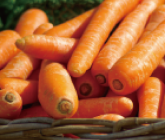
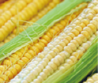
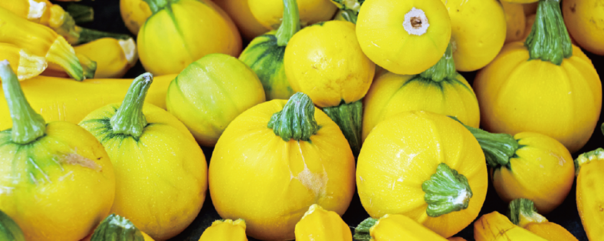

Vegetables



Carrots are crunchy, sweet root vegetables packed with beta-carotene, fiber, and Vitamin A. Best known for supporting eye health and immunity, they come in bright orange, purple, and yellow varieties. Versatile and low in calories, they are delicious consumed raw as a crisp snack or cooked in soups, roasts, and salads.
Corn (maize) is a sweet and versatile cereal grain rich in carbohydrates, dietary fiber, and essential B vitamins. Packed with eye-healthy antioxidants like lutein, it provides a steady source of energy. Enjoyed worldwide, corn can be eaten fresh on the cob, popped into popcorn, roasted, or cooked into soups and salads.
Bell peppers (sweet peppers) are vibrant, crunchy vegetables packed with Vitamin C, dietary fiber, and antioxidants. Available in bright red, yellow, orange, and green, they boost immunity and promote skin health. Low in calories, they are delicious eaten raw in salads, stir-fried, or roasted.
Contact
For any questions or suggestions about Vegetables, Vegetables Club or your online order you can contact Vegetables Customer Service by phone, email or post and we’ll be happy to help.
Vegetables are essential, nutrient-dense foods that form the foundation of a healthy diet. Packed with vital vitamins, minerals, dietary fiber, and antioxidants, they strengthen the immune system, improve digestion, and support long-term cardiovascular health. Available in a vibrant array of colors and types—from leafy greens to root crops—each variety provides unique protective nutrients.
Incredibly versatile in the kitchen, vegetables adapt seamlessly to diverse culinary traditions around the world. They can be eaten raw in crisp salads, lightly steamed, stir-fried, roasted, or blended into hearty soups and smoothies. Incorporating a colorful mix of vegetables into daily meals is one of the simplest and most effective ways to maintain overall vitality.
Incredibly versatile in the kitchen, vegetables adapt seamlessly to diverse culinary traditions around the world. They can be eaten raw in crisp salads, lightly steamed, stir-fried, roasted, or blended into hearty soups and smoothies. Incorporating a colorful mix of vegetables into daily meals is one of the simplest and most effective ways to maintain overall vitality.
E-mail : Vegetables@aaabbccc.com
PHONE : +886-123-456-789
PHONE : +886-123-456-789
